Voorstel · november 2026
Een nieuw ontwerp voor hva.nl/samenwerken, bekeken vanuit de partner.
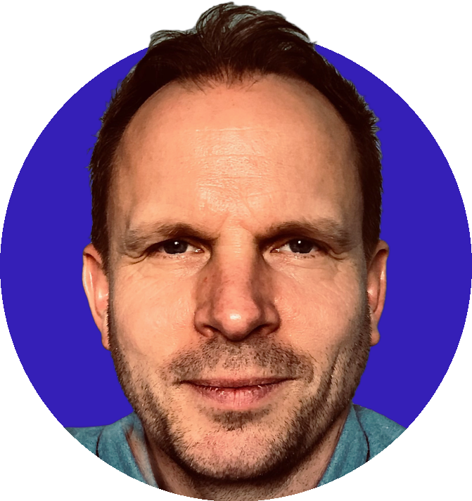
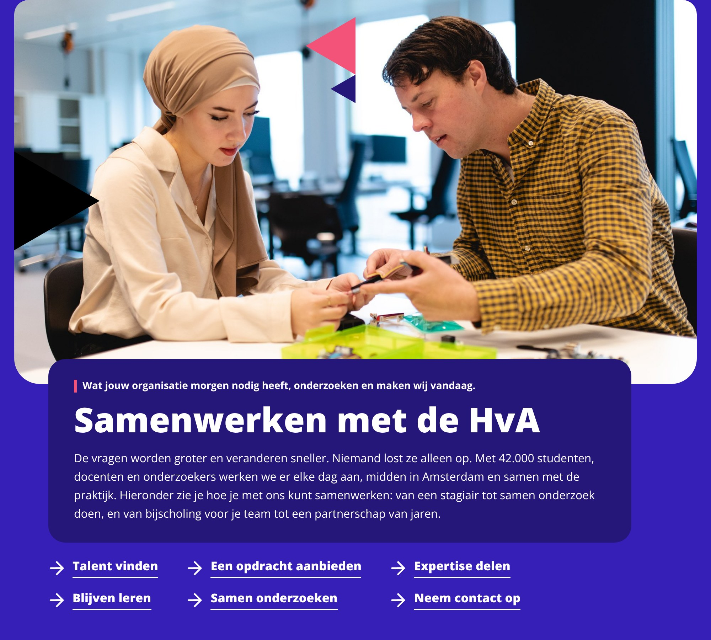
Van oud naar nieuw
hva.nl/samenwerken
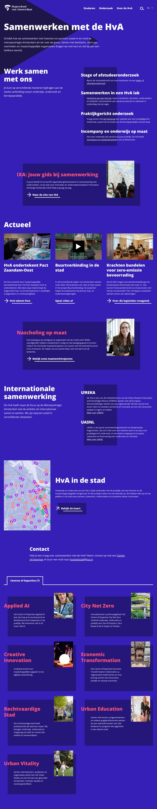
versie E van het ontwerp
Binnen de huidige site?
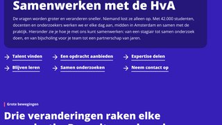
CTA List direct onder de kop. Titels tot 70 tekens.
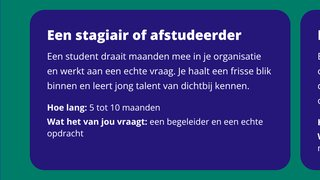
Gewone tekst in bestaande blokken.
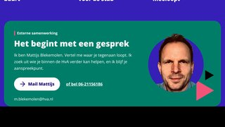
Person Card met naam, functie, foto, mail en telefoon.
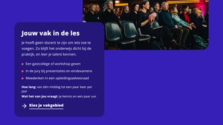
Een afronding in de stylesheet. Nu al mogelijk: hoeken in de foto inbakken, alleen op Marine.
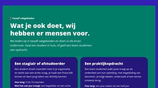
Afwisseling leest prettiger en scheidt secties beter. Nodig: een kleurkeuze per sectie in het CMS, uit vaste huisstijlkleuren.
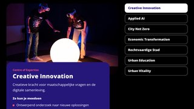
Tabs staan in de Storybook, maar nog niet in het CMS. Die beschikbaar maken.
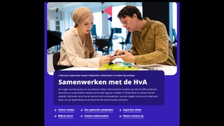
Bestaat nog niet. Het webteam maakt deze kop. Nu al mogelijk: Article Header.
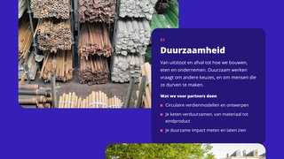
Een nieuw blok voor de drie D’s en Blijven leren. Nu al mogelijk: foto en tekst los.
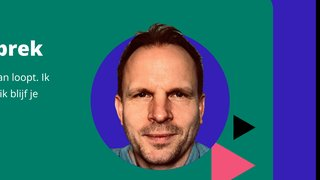
Nieuwe animaties. Mooi, maar niet nodig. De pagina werkt ook zonder.
Uitgelicht
Nu staat er een titel en een lange zin over de HvA op een grote driehoek, zonder beeld. In het ontwerp opent de pagina met een grote foto van samenwerken, een korte belofte en zes knoppen naar wat je zoekt.
Een partner ziet in één oogopslag wat er kan en klikt meteen door naar zijn eigen vraag. De foto laat zien hoe samenwerken er echt uitziet.
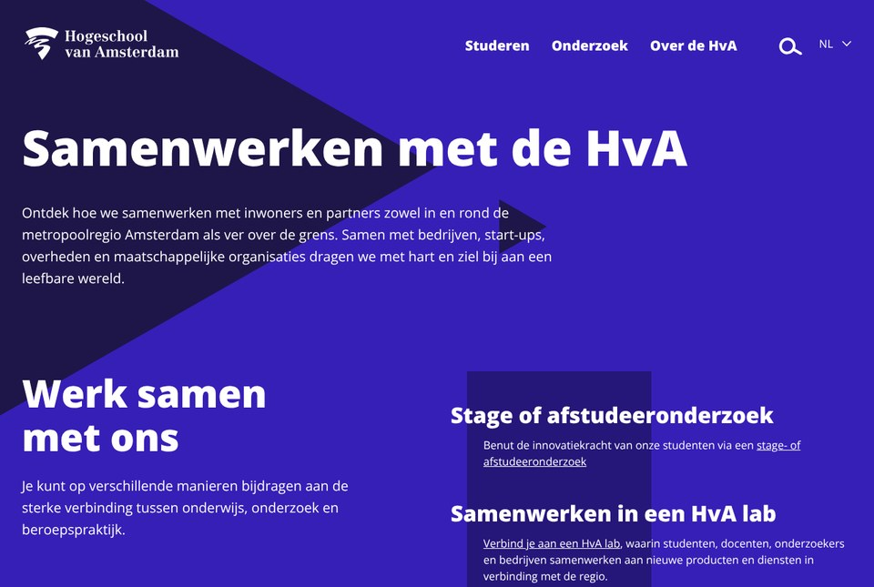
NuZo ziet de kop er nu uit: tekst op de vaste sjabloondriehoek, zonder foto.
1 2 3 4Uitgelicht
Nu staan tekst en foto los van elkaar in rechte blokken. In het ontwerp valt een tekstvak half over een grote foto, afwisselend links en rechts.
De drie D’s vertellen waar de HvA voor staat. Grote beelden maken dat verhaal tastbaar en houden een lange pagina levendig.
Terugval die nu kan: foto en tekst los van elkaar.
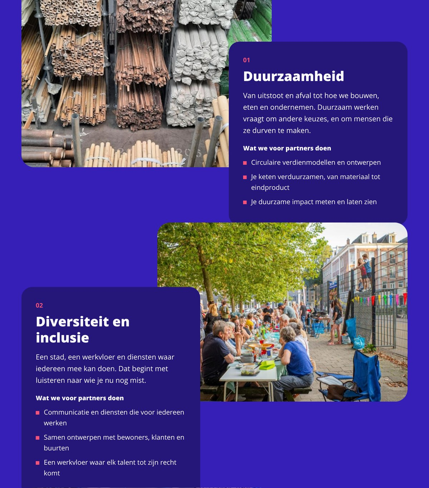
Nieuw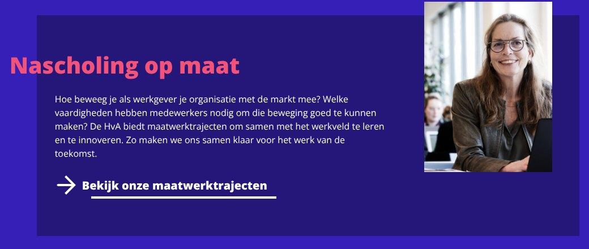
NuUitgelicht
Nu staan de zeven Centres of Expertise als lange lijst onder elkaar, en de vakgebieden ontbreken. In het ontwerp kies je een vakgebied of Centre, en zie je meteen foto, uitleg en wat je samen kunt doen. Groen voor de vakgebieden, zwart voor onderzoek.
Veel informatie, en toch overzichtelijk: de partner kiest zelf wat hij wil zien. De kleur laat zien waar een nieuw onderwerp begint en geeft afwisseling.
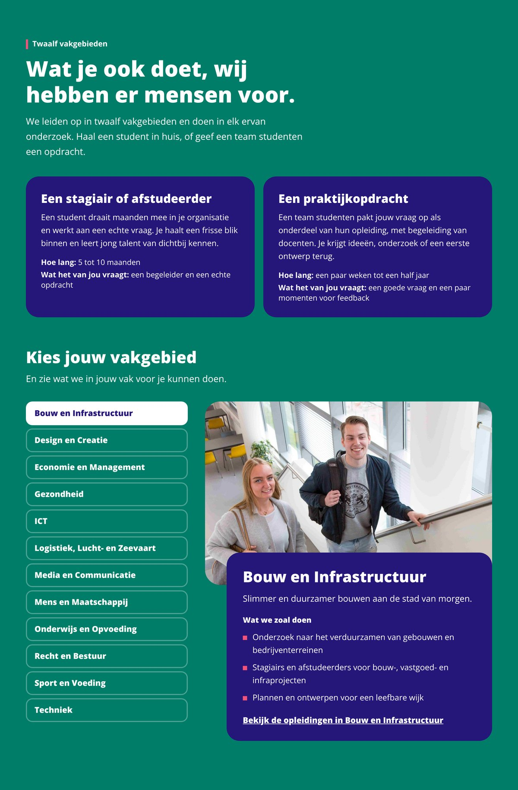
Nieuw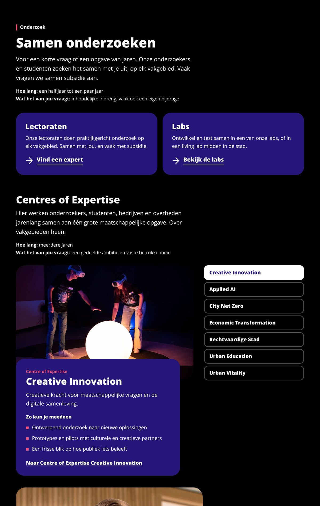
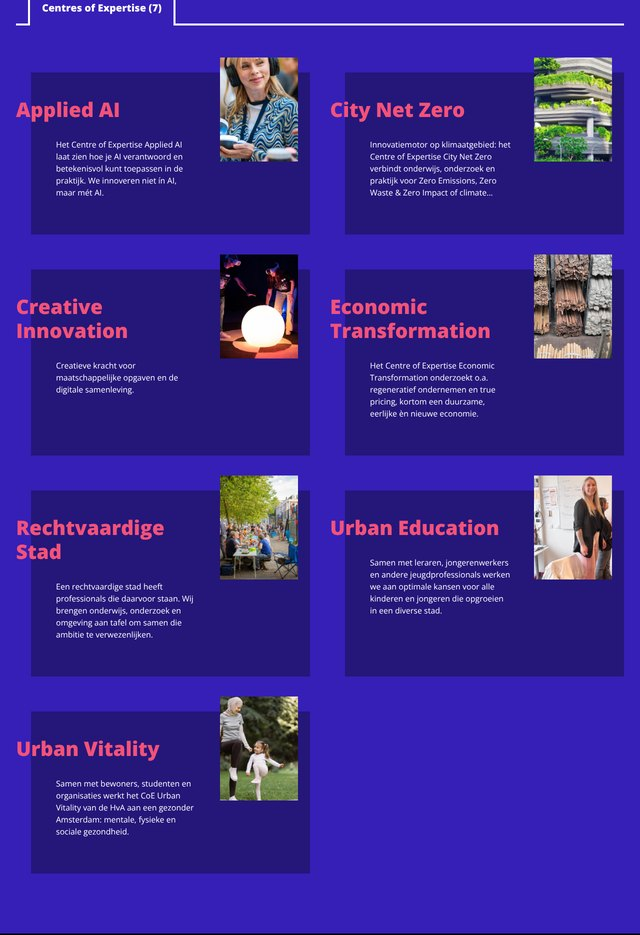
NuNu: zeven kaarten onder elkaar, zonder vakgebieden.
1 2 3Uitgelicht
Nu is alles recht en hoekig. In het ontwerp hebben foto’s, tekstvakken en knoppen ronde hoeken. De driehoeken blijven scherp.
Ronde hoeken maken de pagina vriendelijker en toegankelijker, zonder de huisstijl los te laten. Naast al dat ronde vallen de scherpe driehoeken juist meer op.
Eén afronding toevoegen in de stylesheet voor beeld, kaders en knoppen. Dan geldt het meteen voor de hele site.
Tussenoplossing die nu kan: de hoeken in de foto zelf inbakken. Werkt alleen op een Marine achtergrond, en op mobiel worden de hoeken mee kleiner.
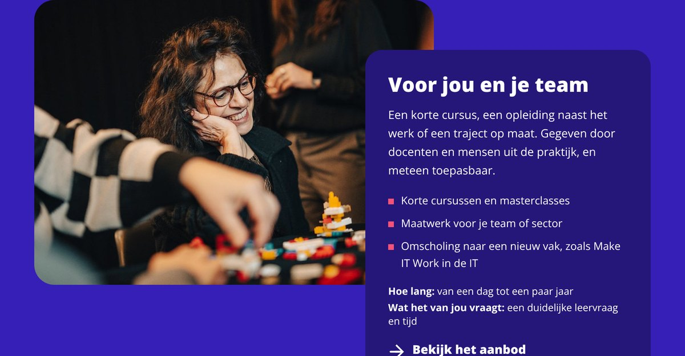
NieuwWaar het op gebaseerd is
Bekijk het zelf
Deze pagina kan een proeftuin zijn. Wat hier werkt, kan ook de rest van hva.nl aantrekkelijker en toegankelijker maken.